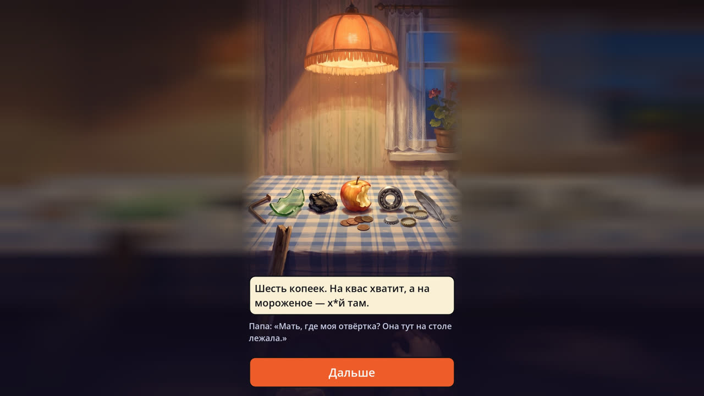

Everyone who grew up near a patch of waste ground knows the game. You find a good stick. The nettles are taller than you. Something has to be done.
On Friday 14 November that was all we had: the memory, a rude Russian title that does not translate politely, and one of us saying "the kid should talk the whole time, and he should talk like his dad". On Sunday night the game was public on itch.io: five days of the summer of 1985, a boss, seven neighbours, more than five hundred voiced lines and build number 56.

This is how that happened, and why we think it is a good way to make a game like this one.
The method: play it, say how it felt, get a new build
People call it vibe coding. The name undersells it. What we actually did was shrink the loop until a design decision took an hour.
One of us had the idea, the town and the sense of humour. He wrote down what the game was in a few pages. Claude wrote the code, built the models in Blender, painted the textures and generated the voices and the music with ElevenLabs. Then came the only step that matters: a build went on a phone, he played it, and he said what was wrong in one sentence. That sentence was the whole specification for the next build.
The sentences, in order:
- Build 8: the swing "feels like waving a wand". So the stick moved behind the shoulder and learned to wind up, strike and follow through.
- Build 11: "concept is sound, had a few laughs", but a hit should cut like a blade. So now you draw a line and the stick travels along it.
- Build 16: "weird as f***". Fair.
- Build 17: "hit still feels weak, no follow-through, hands bad". Heavier stop on contact, a shake, a trail, a finish over the far shoulder.
- The arms, somewhere around build 30: "scary and appalling". He was right: a child’s elbows flapping in first person look like a horror game. During a swing you now see only the stick and the fists, drawn as outlines.
- Build 33: "Not bad."
- Build 47: "Loved it." And in the same breath: "still feels like it is missing quite a lot of systems."

The swing was rebuilt half a dozen times in two days. On a normal schedule each of those is a week of somebody’s work and an awkward meeting. Here each one cost an hour, so nobody defended the old one. That is the real gain: not that the code is quick to write, but that it is cheap to throw away.
Three rules that kept it from turning to mush
Working by feel fails in a known way: you pile up features on top of a core that is not fun and end up with a large, dull thing. Three rules stopped that.
- The hit first. For the first day there was no town, no neighbours and no score that meant anything. There was a stick and a weed. Nothing else was allowed in until swinging was worth doing for two minutes on its own.
- A verdict gets a build, not an argument. If the person holding the phone says it feels weak, it is weak. We do not explain why it is actually fine.
- Feel decides what is fun. Measurement decides what is true. When the browser version "froze up bad" on a PC, we did not guess. We built a small tool into the game that records every slow frame, and it found three things: the game was drawing 240 frames a second on a 240 Hz screen for no reason, it stopped for 1.4 and then 3.5 seconds the first time it saw each new thing, and the fix we had already shipped for fullscreen (draw fewer pixels) was itself halving the frame rate in a browser. We would not have guessed the last one, because it was our idea.

What the machine was good at, and what it was not
Good: everything that is work. Seven neighbours modelled and voiced. Four districts of a town. A voice for the kid and five hundred lines for it. Tests that play the game so a new build does not quietly break an old day. An Android build and a browser build from the same evening.
Bad: knowing what is funny, and knowing what feels good in the hand. Every one of those came from a person with a phone. The line everybody quotes back to us is a child misunderstanding his father, and no tool proposed it. The painted look came from one picture he chose out of a dozen and said "this one, a summer you remember"; the game was then repainted three times to get near it.

Why this game suits the method
A game about hitting weeds has no design document that can tell you whether it is good. It is good when the cut feels right and the kid makes you laugh, and you find both out only by playing. A strategy game with a hundred years of economy needs a plan. This needed forty tries.
It also helped that the game is honest about what it is. It is 18+ and sweary all the way through, and it is in Russian, because the jokes are about a Russian childhood. We did not sand it down to fit more shelves.
What it still needs
Three days gets you a game that makes people laugh for twenty minutes. It does not get you a game people come back to. Here is what we know is missing.
- More to do between the swings. His verdict stands: it is short on systems. We have not decided which ones yet. That is the next argument at the kitchen table, and we would like you in it.
- The hit, again. It is better than build 8 and not yet the thing you do for its own sake. It will keep changing.
- The browser on a PC. The Android APK is smooth. The browser version on a big screen is still slower than it should be.
- The years. 1985 is in. The plan is for Seryoga to grow up through 1990, 1995 and 2000, in the same town with different sticks and different problems.
- English. The game is in Russian. If you would play it in English, tell us, because that is a real job and we will only do it if somebody wants it.

So play it, and tell us one sentence about how it felt. That is how every build so far got made, and we see no reason to stop now. The comments on the itch.io page are open, and so are our email and the forum.